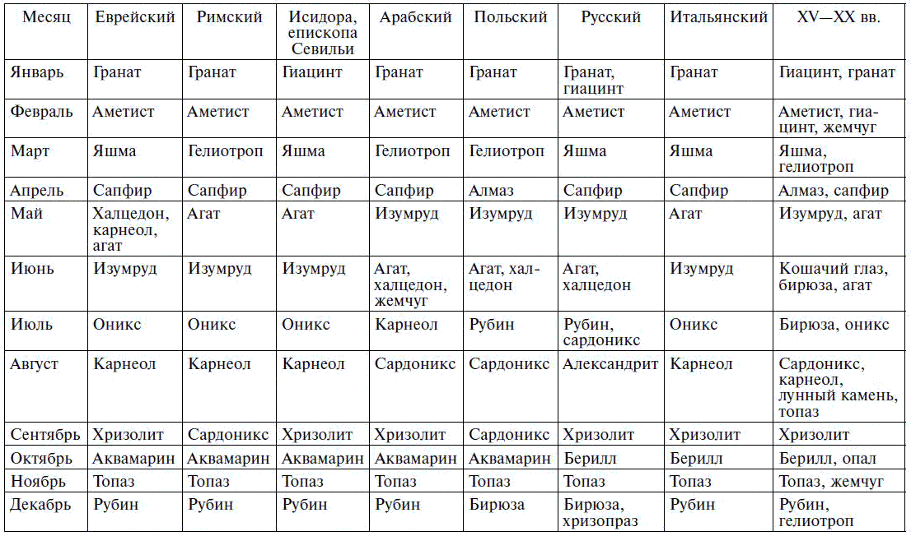
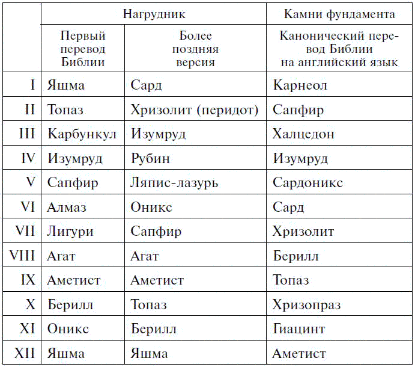
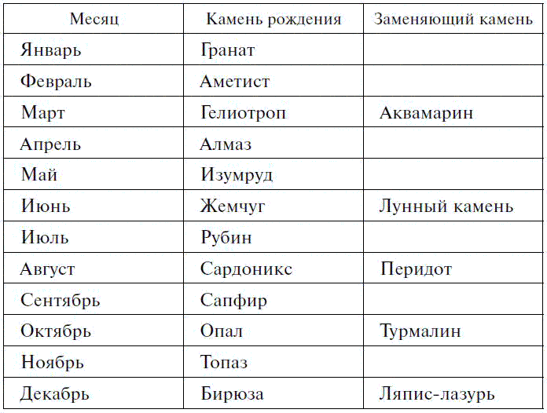
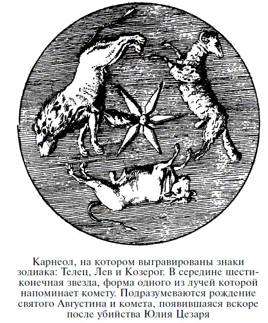
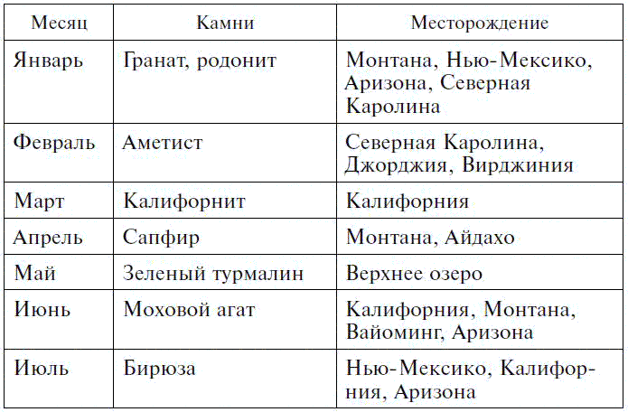
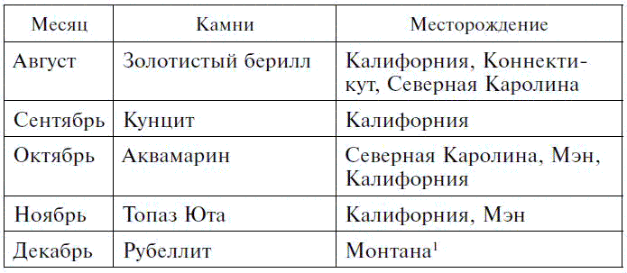
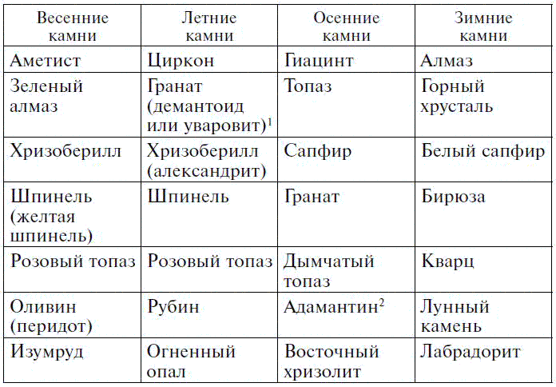

Камни, соответствующие месяцу рождения

Происхождение веры, будто каждому месяцу года посвящен особый камень и что этот камень месяца наделен особыми свойствами по отношению к родившимся в этом месяце и является камнем их рождения, можно проследить от произведений Иосифа Флавия, написанных в I веке н. э., и святого Иеронима, датирующихся V веком. Оба эти автора ясно говорят о связи между двенадцатью камнями нагрудника первосвященника и двенадцатью месяцами года, а также двенадцатью знаками зодиака. Однако, как ни странно, несмотря на эти древние указания, обычай носить камни рождения возник значительно позднее. Похоже, этот обычай возник в Польше примерно в XVIII веке. Причина возникновения обычая носить определенные камни заключалась в вере в целебные свойства камней, причем каждому камню приписывалась способность исцелять от определенной болезни. Камни же рождения могли и не иметь свойств исцелять именно ту болезнь, которой страдал человек, а кроме того, они по своему воздействию могли не соответствовать заветным желаниям владельца. Другими словами, в основе обычая носить определенные камни лежала вера в его особые свойства, возникшая значительно раньше, чем стали признавать мистическую связь между камнем месяца и человеком, родившимся в этом месяце.
Порядок, в котором камни фундамента Нового Иерусалима перечислены в Апокалипсисе, определял последовательность камней, соответствующих месяцу рождения. Первый камень приписывался главному апостолу святому Петру и марту, месяцу весеннего равноденствия, второй апрелю, третий маю и т. д. Однако много столетий спустя, когда, вероятно, как уже говорилось, в Польше, с помощью раввинов или еврейских торговцев драгоценностями ношение камней, соответствующих месяцу рождения, вошло в обычай, в этом порядке произошли изменения. Некоторые камни, упомянутые в числе камней нагрудника или камней фундамента Нового Иерусалима, были заменены другими, а именно бирюзой, соответствующей декабрю, рубином, соответствующим июлю, и алмазом, соответствующим апрелю. Еще позднее бирюза стала камнем, соответствующим июлю, а рубин приписали декабрю.
Есть некоторые доказательства теории, согласно которой вначале все двенадцать камней приобретались одним и тем же человеком и носились по очереди, каждый в тот месяц, которому он соответствовал, или во время доминирующего влияния его знака зодиака. Считалось, что камень, соответствующий месяцу, в этот период в полной мере проявляет свои лечебные или талисманные свойства. Вероятно, это стало причиной рекомендаций ежемесячно менять украшения.
Кажется вполне вероятным, что вера в камни рождения, получившая распространение в Польше, была вызвана влиянием евреев, осевших в этой стране незадолго до того, как появились первые свидетельства поочередного ношения одного из двенадцати камней в соответствующие месяцы. Живой интерес, проявляемый евреями к камням нагрудника, многочисленные и разнообразные комментарии еврейских ученых мужей по этому вопросу и тот факт, что состоятельные евреи всегда брали с собой в дорогу множество драгоценных камней, – все подтверждает предположение о том, что мода на ношение камней рождения распространилась под их влиянием. Однако правильна эта догадка или ошибочна, обычай вскоре широко распространился и сегодня имеет не меньше приверженцев, чем раньше. Не может быть никаких сомнений в том, что владелец кольца или украшения с камнем рождения уверен, что он обладает предметом, теснее связанным с его или ее личностью, чем какой-либо другой камень, как бы дорог и красив он ни был. Если возразят, что это не более чем воображение, вызванное ощущением, мы должны помнить, что воображение есть один из самых сильных факторов нашей жизни; действительно, можно процитировать Наполеона, сказавшего, что оно правит миром.
Вероятно, самый ранний пример, когда камни нагрудника напрямую ассоциируются с месяцами года, мы находим в «Еврейских древностях» Иосифа Флавия.[133] Вот эти слова:
«Облачения первосвященника были сшиты из льняной ткани, символизирующей землю, голубой цвет означал небо, подобное сверкающей молнии, а звон колоколов напоминал раскаты грома. Что же касается эфода, он указывал на то, что Бог сотворил вселенную из четырех стихий, а что касается золота, вплетенного в него, полагаю, оно внушало мысль о красоте, которой озарено все сущее. Он также поместил нагрудник посередине эфода, подобно земле, занимающей промежуточное место в мире; а кушак, опоясывающий первосвященника, символизирует океан, потому что он присутствует повсюду. А два сардоникса на пряжках на плечах первосвященника указывают на солнце и луну. Что же касается двенадцати камней, понимаем мы под ними месяцы или двенадцать знаков того, что греки называют зодиаком, мы не ошибемся при определении их смысла. А голубая шапка, кажется, означает небо, потому что иначе на ней не было бы написано имя Бога. Она также была украшена золотой короной, потому что это великолепие угодно Богу».
Этот отрывок был переведен святым Иеронимом триста лет спустя в письме Фабиоле[134] и, несомненно, положил основание более позднему обычаю ношения одного из этих камней как камня рождения, или астрального камня, соответствующего определенному знаку зодиака. Как видно, оба применения указаны в отрывке Иосифа Флавия. В более поздние века, когда Апокалипсис, вначале обычно удостаивавшийся меньшего внимания, чем остальные части Нового Завета, стал предметом пристального изучения и источником мистических предположений, двенадцать камней фундамента Нового Иерусалима стали упоминаться чаще камней нагрудника. Хотя список камней фундамента, безусловно, основан на гораздо более раннем списке камней, украшавших нагрудник Аарона, порядок расположения камней в этих списках неодинаков, а кроме того, меняются и названия камней. Возможно, многие эти различия, если не все, вызваны ошибками при переписывании или неверным запоминанием при записи по памяти.
О том, что на камнях фундамента были написаны имена апостолов, ясно говорится в Апокалипсисе, но только в XVIII или XIX веке комментаторы Апокалипсиса занялись поиском аналогий между этими камнями и апостолами. Вначале символика камней рассматривалась с чисто религиозной точки зрения. Многие древние отцы церкви, за исключением Епифания, не уделяли самим камням должного внимания, да и знали о них довольно мало. Но со временем люди все больше стали замечать их природную красоту. Камнерезное искусство развивалось и требовало более качественного и отборного материала, а предполагаемые свойства камней вышли на первый план. Появилась символика камней, которая усиливалась и подчеркивалась восхвалением природных свойств и особенностей. По-видимому, вначале это было скорее языческое представление, нежели христианское, что, вероятно, делало его менее привлекательным в глазах ранних христиан. Только когда христианство фактически повсеместно распространилось в греческом и римском мире, а языческие традиции ослабли и наконец совершенно забылись, стали замечать свойства камней. Но некоторая часть суеверий сохранилась в некоторых, почти языческих, церемониях христианской религии.
Одним из первых авторов, напрямую ассоциировавших с апостолами символику драгоценных камней, названных в Апокалипсисе святым Иоанном камнями фундамента Нового Иерусалима, является Андреас, епископ Цезареи. Критики считали, что этот автор жил в V веке н. э., но в результате более поздних исследований выяснилось, что он, вероятно, жил во второй половине Х века. Вот его трактовка:
«Яшма, которая, как и изумруд, зеленоватого цвета, вероятно, означает святого Петра, главу апостолов, того, кто более других скорбел о смерти Христа и чья любовь к Нему была пылкой и крепкой. Благодаря своей страстной вере он стал нашим пастырем и руководителем.
Поскольку сапфир подобен небесам (от этого камня произошел цвет, называемый в народе лазурным), то я полагаю, что он означает святого Павла, поскольку тот был вознесен на третье небо, где прочно обосновалась его душа. Туда он стремится поднять всех, кто может быть послушным ему.
Халцедон не был вставлен в нагрудник первосвященника, вместо него был вставлен карбункул, о котором здесь не упоминается. Может быть, однако, автор назвал карбункул халцедоном. Тогда карбункулу можно уподобить Андрея, великолепно озаренного огнем Святого Духа.
Изумруд, зеленого цвета, питается маслом, поэтому его прозрачность и блеск остаются неизменными; мы полагаем, этот камень означал евангелиста Иоанна. Он утешал грешные души божественным елеем и милосердием своего учения, придающего постоянную силу нашей вере.
Сардониксом, своей прозрачностью и чистотой напоминающим цвет человеческого ногтя, скорее всего, обозначается Иаков, увидевший раньше других, что он несет смерть Христу. Здесь содержится намек на ноготь, так как его легко срезать без ощутимой боли.
Сард с его рыжевато-коричневой прозрачной окраской напоминает огонь. Он обладает свойством исцелять опухоли и раны, нанесенные железом; поэтому я считаю, что он обозначает красоту добродетели, характеризующей апостола Филиппа, потому что его добродетель, оживленная огнем Святого Духа, исцеляла душу от ран, нанесенных пороками дьявола, и возвращала ее к жизни.
Хризолит, сверкающий великолепием золота, может быть, означает Варфоломея, славящегося своими божественными проповедями и множеством добродетелей.
Берилл, имитирующий цвета моря и воздуха и несколько напоминающий гиацинт, кажется, намекает на восхитительного Фому, особенно когда он совершил долгое путешествие по морю и даже достиг Индии, посланный Богом проповедовать спасение народам этого края.
Топаз, красноватого цвета, несколько напоминающий карбункул, останавливает выделение молочно-белого потока при болезнях глаз. Он, кажется, означает Матфея, потому что тот был наделен божественным пылом, а его кровь воспламенена Христом, и он считался достойным просвещать своим Евангелием тех, чьи сердца были ослеплены, чтобы они уподобились новорожденным младенцам, пьющим молоко веры.
Хризопраз, более яркого золотистого цвета, нежели само золото, символизирует святого Фаддея; золото (хризос) символизирует царство Христа, а „прассиус“ – смерть Христову – и то и другое он проповедовал Абгару, царю Эдессы.
Гиацинт, небесного цвета, означает Симона Зилота, ревнивого к дарам и милостям Христа и наделенного небесной мудростью.
Аметист, огненно-красного цвета, обозначает святого Матфея, чье красноречие было полно небесного огня, а также страстного стремления служить и угождать Богу, посчитавшему его достойным занять место апостола Иуды».
Некоторые теологи возражали против ассоциации камней фундамента с апостолами, так как считали, что только сам Христос может считаться основанием своей церкви. Поэтому символика этих камней приписывалась только Христу, а комментаторы руководствовались цветом камня, считая, что он олицетворяет какое-нибудь качество. Так, один автор считал, что зеленоватая яшма означает удовлетворение; небесно-голубой сапфир – душу; ярко-красный халцедон – стремление к истине; прозрачный зеленый изумруд – доброту и добродетель; сардоникс цвета ногтя – силу духовной жизни; красный сард – готовность пролить кровь за церковь; желтый хризолит – превосходство Его божественной природы; берилл цвета морской волны – умеренность и умение управлять страстями; стеклянно-зеленый топаз (хризолит?) – прямоту; ядовитого цвета хризопраз – суровость к грешникам; фиолетовый или пурпурный гиацинт – королевское достоинство; и, наконец, пурпурный аметист с легким красным оттенком – совершенство.
Андреас из Цезареи откровенно признается, что руководствовался гораздо более древним источником, коротким, но очень ценным трактатом о камнях нагрудника, написанным святым Епифанием, епископом Констанцы на Кипре, который умер в 402 году н. э. Автор отмечает в нескольких местах их лечебные и талисманные свойства и выражает свое мнение по поводу порядка расположения на них названий колен Израиля. Поскольку камни фундамента справедливо названы в Апокалипсисе «апостольскими камнями», то камни нагрудника заслуживают названия «камней колен», или астральных камней. Действительно, в Средние века евреи четко ассоциировали колена со знаками зодиака в следующем порядке:
Иуда …………………………………… Овен
Иссазар ……………………………… Телец
Звулун ……………………………….. Близнецы
Реубен ……………………………….. Рак
Симеон ……………………………… Лев
Гад ………………………………………. Дева
Эфраим …………………………….. Весы
Манассей ………………………….. Скорпион
Беньямин …………………………… Стрелец
Дан …………………………………….. Козерог
Нафтали …………………………….. Водолей
Ашер …………………………………. Рыбы
Для Рабануса Мавра девять самоцветов царя Тира, упомянутые Иезекиилем, означали девять рангов ангелов, а двенадцать камней фундамента из Апокалипсиса – двенадцать апостолов.
Из древних и более поздних обычаев следует, что независимо от того, где и когда эти камни впервые начали носить в качестве камней рождения, год должен был начинаться с марта. Это станет ясно, когда мы сравним восемь списков, тщательно собранных из разных источников:

В этих восьми списках интересно указать камни, наиболее благоприятные в каждом месяце, следующим образом: цифры указывают на число списков, в которых указаны эти камни (в том числе заменяющие).
Январь ……… Гранат 7, гиацинт 2
Февраль ……. Аметист 8, гиацинт 1, жемчуг 1
Март …………. Яшма 5, гелиотроп 4
Апрель ……… Сапфир 6, алмаз 2
Май ………….. Агат 5, изумруд 4, халцедон 1, карнеол 1
Июнь ………… Изумруд 4, агат 4, халцедон 3, бирюза 1, жемчуг 1, кошачий глаз 1
Июль ………… Оникс 5, сардоникс 1, карнеол 1, рубин 1, бирюза 1
Август ………. Карнеол 5, сардоникс 3, гелиотроп 1, топаз 1, александрит 1
Сентябрь ….. Хризолит 6, сардоникс 2
Октябрь ……. Берилл 8, аквамарин 5, опал 1
Ноябрь ……… Топаз 8, жемчуг 1
Декабрь ……. Рубин 6, бирюза 2, хризопраз 1, гелиотроп 1
За исключением января, где вместо граната появляется гиацинт, и декабря, где вместо хризопраза рубин, первые составы фактически идентичны камням фундамента, если учесть, что одиннадцатый камень соответствует январю, двенадцатый февралю, первый марту и т. д.
О приписывании камней рождения различным месяцам или знакам зодиака Пуже-сын писал в 1762 году, что, по его мнению, этот обычай зародился в Германии (другие называют Польшу) примерно за двести лет до его времени. Он добавляет, что, хотя распределение камней по месяцам было воображаемым и неизвестным древним авторам, оно вскоре стало популярным, и многие, особенно женщины, видя в этом некую тайну, захотели носить кольца с камнями, соответствующими месяцу их рождения, на которых гравировался их знак зодиака.
Как бы ни был прав Пуже относительно периода, когда зародилась привычка носить кольца с камнями рождения, он, как уже известно, ошибался, полагая, что порядок расположения камней и приписывание их месяцам или знакам зодиака были плодом воображения. На самом деле, безусловно, этот порядок был основан на списке из Апокалипсиса, который после многочисленных поправок вернулся к своему первоначальному виду – перечню двенадцати камней нагрудника первосвященника.
Обычай носить набор из двенадцати камней, соответствующих знакам зодиака, кажется, существовал в XVI веке, потому что Екатерина Медичи, говорят, носила пояс с двенадцатью камнями, среди которых были ониксы величиной с крону, украшенные талисманными рисунками. Рассказывают, что двести лет спустя этим поясом владел господин д’Эннери, чья коллекция античных медалей считалась в то время лучшей в Париже. Однако нет никаких свидетельств, что двенадцать камней пояса Екатерины были теми, которые приписывали знакам зодиака как в более ранние, так и в более поздние времена.
Хотя замена последнего списка традиционным, проверенным временем списком камней рождения получила одобрение Национальной ассоциации ювелиров в Канзасе в августе 1912 года, вряд ли можно сказать, что это удовлетворительное решение вопроса, важного не только с коммерческой точки зрения. Дело в том, что вера в таинственное влияние камней рождения на судьбы людей зародилась давно и жива до сих пор в умах тех, кто наделен хоть каплей воображения или, если хотите, романтизма. Стремление к нему более распространено, чем многие думают, и это вполне естественная реакция на прогресс материализма, на утверждение, что на небе или на земле нет ничего, чего бы мы не могли познать своим разумом.
Это мнение следует главным образом учитывать при любой попытке традиционно приписать камни определенному месяцу или знаку зодиака. Как только мы позволим духу коммерциализма диктовать выбор таких камней, в соответствии с сиюминутным интересом торговцев, возникнет серьезная опасность, что люди потеряют к ним интерес. Чувство, истинное чувство – самое лучшее, что есть в человеческой натуре. Пока его затмевает страх, оно может привести к пессимизму со всем злом, которое влечет за собой это состояние души, а освещенное надеждой, оно вселяет человечеству оптимизм, более светлый взгляд на будущее, помогающий людям преодолевать жизненные трудности. Таким образом, чувством нельзя пренебрегать, а ничто так легко не уничтожает его, как сознание, что его постоянно эксплуатируют в меркантильных целях. По этой причине те, кто занимается вопросом камней рождения, должны делать это крайне бережно и осторожно.
Вполне справедливо, что существует сейчас и существовало в прошлом несколько списков подобных камней, в какой-то мере отличающихся друг от друга, но все они основаны или на списке камней фундамента, приведенном в Апокалипсисе, или на перечне камней, украшавших нагрудник Аарона и перечисленных в Книге Исхода. Для убедительности ниже приведены три списка, взятые из первого перевода Библии на английский язык и из исправленного в результате недавних исследований канонического перевода Библии.

Хотя в Апокалипсисе порядок расположения камней иной, названия их почти идентичны названиям камней нагрудника. Вместо халцедона (chalcedonius), вероятно, следовало читать «кархедонус», название рубина; сардоникс – это оникс из Книги Исхода; гиацинт (сапфир) – вероятно, «лигури»; сапфир – ляпис-лазурь, а сард эквивалентен карнеолу. Таким образом, остается необъяснимым только хризопраз, который по какой-то причине заменил агат. При связывании камней фундамента с месяцами нужно учесть, что первый камень – яшма – приписывался марту, с которого, как считалось, начинался год.
Вот список, предложенный и принятый в Канзасе:

Среди многих отличий этого списка от привычного следует заметить, что рубин переместился с декабря на июль, поменявшись местами с бирюзой, которая стала камнем декабря. Это приняли на том основании, что камень более теплой окраски лучше подходит для июля, а более бледная бирюза скорее соответствует зимнему месяцу, когда солнце греет не так жарко. Однако правдиво и обратное; ведь зимой мы ищем тепла, тогда как летом нет ничего благодатнее прохлады. Эта перестановка – просто возвращение к порядку, в котором камни расположены в польском списке, вероятно популярном в Европе XVIII века благодаря Марии Лещинской, жене Людовика XV. В результате еще одной нежелательной перемены хризолит (перидот) потерял место, которое он всегда занимал как камень сентября, и становится замещающим сардоникс камнем августа, тогда как сапфир, обычно камень апреля, сделан камнем рождения для сентября. Для октября ни турмалин, ни опал не могут считаться более подходящими, чем берилл, а для июня в качестве замены жемчуга предпочтительнее звездчатый камень, чем лунный.
Эту предполагаемую замену или насилие нельзя допустить. Проверенный временем порядок знают все, кто этим интересуется, и любая перемена, пусть и к лучшему, обязательно поколеблет уверенность людей в тех, кто владеет вопросом. Прежде всего, не должно быть никакого дублирования или утроения камней рождения для данного месяца. При существующем разнообразии подбор комбинаций камней рождения и астральных или зодиакальных камней практически становится неограниченным.
Поскольку алмаз, кажется, не был известен древним и до последнего века не вносился в списки камней рождения и поскольку алмазы, подобно золоту и платине, хорошо сочетаются с другими камнями, не лучше ли было бы исключить алмаз из списка камней месяца, а использовать этот камень как дополнительное украшение других камней? Жемчуг, который вообще не является камнем, вовсе не следует включать в список, но его можно носить, например, в качестве эмблемы чистоты и т. д.
Турмалин как самоцвет стал употребляться не ранее XVIII века, и его включение в список камней рождения кажется неуместным, поскольку в этот список должны входить только драгоценные или полудрагоценные камни, известные и носимые с глубокой древности.
«Астральные», или «зодиакальные», камни – это термины, обозначающие самоцветы, которые считались связанными со знаками зодиака каким-то особенным, таинственным образом. Хотя эти знаки, как и месяцы, разделяют год на двенадцать частей, начало и конец их действия не совпадают с началом и концом месяца, а перекрывают их. Так, например, Водолей охватывает период с 21 января по 20 февраля, Рыба с 21 февраля по 20 марта, Овен, весенний знак, с 21 марта по 20 апреля и так далее, вплоть до Козерога, который начинается в зимнее солнцестояние. Таким образом, имеются все необходимые возможности для расширения выбора камней рождения, соблюдая при этом традиционный порядок их соответствия месяцам, уходящий корнями в эпоху раннего христианства и нарушать который произвольными изменениями из-за их связи со священными камнями из Писания кажется просто святотатством.

Кроме того, имеются «талисманные» камни, или камни двенадцати ангелов-хранителей, покровительствующих всем, родившимся в данном месяце. Здесь имеется еще один проверенный временем список, отличающийся от приведенных выше тем, что почти в любом случае человек имел возможность выбрать один из трех камней рождения или объединить все три в художественном изделии, чтобы получить от них всю выгоду, обещанную древними мудрецами. Таким образом, нет абсолютно никакого предлога легкомысленно манипулировать древней, широко распространенной и квазирелигиозной верой в особые свойства какого-либо определенного камня для каждого месяца, как и носить один камень.
Поскольку может показаться уместным, чтобы рожденный в Соединенных Штатах носил камни, добываемые в нашей стране, автор не так давно составил список камней, не заменяющих настоящие камни рождения, но пригодных для ношения из чувства патриотизма. Разумеется, там, где традиционно рекомендуется какой-либо определенный камень, тот факт, что он добыт в Америке, служит дополнительным аргументом.


(В этом списке присутствуют три не описанные в предыдущем тексте камня: калифорнит – плотный, массивный везувианит, кунцит – фиолетовая разновидность сподумена, рубеллит – розовый турмалин.)
Год разделен на времена года, или циклы, – весну, лето, осень и зиму, – и у каждого времени года есть свой камень. Изумруд – весенний камень, рубин – летний, сапфир – осенний, а алмаз – зимний.
Для весны ни один драгоценный камень не подходит лучше изумруда. Его красивый цвет – это цвет природы, одевающейся в зеленое, пробуждаясь от долгого зимнего сна. Наряжаясь в зелень различных оттенков и цветов, она выбрала фон, контрастирующий с весенними и летними цветами, а позже с плодами и семенами. Самоцвет весны должен быть редким, а изумруд редкий камень. На рудниках ли Боготы, в древности ли в Забаре, Египет, или в прошлом веке на Урале – его никогда не находили много. Он более мягкого цвета, чем рубин, и менее тверд по структуре.
Рубин, хоть и принадлежит декабрю в качестве камня рождения, является летним камнем. Он рожден в жарком климате – в Бирме цвета голубиной крови, на Цейлоне гранатово-красный, еще более темный в Сиаме. Эти три экваториальных страны – поставщики натуральных рубинов на мировой рынок. Более крупные камни всегда редки, и рубин библейский Иов ценил выше остальных самоцветов, хотя в более точном переводе это, вероятно, был гранат. По твердости, составу, кристаллической структуре и во всех остальных отношениях он равен сапфиру. Это сестринские камни, одинаковые по структуре, но отличающиеся по цвету из-за некоторых различий в их составе, которые кое-кто из ученых даже не связывает с красящими примесями.
Сапфир – осенний камень голубого цвета, словно осеннее небо – символ истины, искренности и постоянства. Менее яркий, чем его сестринский камень рубин, сапфир символизирует спокойную и испытанную любовь, а не бурную страсть; поэтому он подходит для осени, когда заходящее солнце не жжет горячими летними лучами, а сияет умеренным блеском.
Алмаз, зимний камень, символизирует солнце, является камнем света. Его цвет – это цвет льда, он сверкает на солнце, как капля росы или воды из горной реки, как сверкает зимой льдинка, как светят звезды в холодную зимнюю ночь. Он хорошо сочетается со всеми самоцветами, создавая с ними яркий контраст и освещая их, как солнце освещает растения, украшающие землю. Алмаз, камень света, и, как сам свет, содержит спектр всех известных цветов, которые при объединении снова дают белый цвет. Подобно золоту, алмаз очень редок, и даже в разведанных месторождениях добыча его весьма невелика. Месторождения алмазов встречаются в 30—100 раз реже месторождений золота, и поиски и разработки этих месторождений приносят искателям или богатство, или разорение. Иногда находят большие золотые самородки. Алмазы тоже бывают такой величины, что богатейший из богатых призадумался бы, прежде чем уплатить его стоимость счастливцу, владеющему землей, таящей такие сокровища.
Однажды бог недр велел своим приближенным принести ему все известные самоцветы, чтобы сравнить их. Оказалось, что все они различных цветов и твердости, как, например, рубин, изумруд, сапфир и т. д. Тогда он смешал их, раздавил в кулаке и сказал: «Пусть получится нечто, в чем сочтется красота всех этих камней; и пусть оно будет чистым и несокрушимым!» Он сказал, и, о чудо! – родился алмаз, чистый, как капля росы, и невиданный по своей твердости; когда на него упал луч солнца, он заиграл всеми цветами камней, из которых был сделан. «Мой самоцвет будет величайшим камнем вселенной; а для моей царицы я сотворю величайший самоцвет моря», – сказал бог и создал жемчуг.

(1 Демантоидиуваровит – зеленые разновидности граната. Демантоид находили только на Урале, неподалеку от р. Бобровка, поэтому его иногда называют «бобровским гранатом». На западе его называют сибирским хризолитом, хотя к хризолиту он не имеет отношения. Благодаря примеси хрома имеет изумрудно-зеленый цвет. Второй зеленый гранат – уваровит, впервые найден на Урале, и назван в честь русского общественного деятеля графа С.С. Уварова. Говорят, это был любимый камень императрицы Екатерины II. Месторождения уваровита есть в Финляндии, Норвегии, Канаде, США и ЮАР. Минерал имеет бутылочно-зеленый цвет.
2 Адамантин (алмазный блеск) – опаловидный минерал, образующий оболочку, или кору, известкового шпата или серпентина.)
Календарь камней рожденияЯнварь
Камень рождения ……………………………………………. Гранат
Ангел-хранитель ………………………………………………. Гавриил
Его талисманный камень ………………………………… Оникс
Особый апостол ………………………………………………. Симон Петр
Его камень ……………………………………………………….. Яшма
Знак зодиака …………………………………………………….. Водолей
Цветок ………………………………………………………………. Подснежник
Родившейся в январе не следует носить никакого камня, кроме граната; его сверкание обеспечит постоянство, настоящую дружбу и верность.
Февраль
Камень рождения …………………………………………. Аметист
Ангел-хранитель …………………………………………… Бархиел
Его талисманный камень …………………………….. Яшма
Особый апостол …………………………………………… Андрей
Его камень ……………………………………………………. Карбункул
Знак зодиака …………………………………………………. Рыбы
Цветок …………………………………………………………… Примула
Рожденная в феврале может найти искренность и спокойствие духа, свободу от страстей и забот, если будет носить аметист. Пусть только хранит аметист, и все раздоры и заботы ее минуют.
Март
Камень рождения …………………………………………. Яшма, гелиотроп
Ангел-хранитель …………………………………………… Малхедиел
Его талисманный камень …………………………….. Рубин
Особые апостолы …………………………………………. Иаков и Иоанн
Их камень ……………………………………………………… Изумруд
Знак зодиака …………………………………………………. Овен
Цветок …………………………………………………………… Фиалка
Та, что впервые открыла глаза в марте, может быть мудрой, а в дни опасности твердой и отважной, если будет носить гелиотроп до самой смерти. Тот, кто предпочтет яшму, будет его жизнь короткой или долгой, встретит все опасности с отвагой, мудростью и силой.
Апрель
Камень рождения …………………………………………. Алмаз, сапфир
Ангел-хранитель …………………………………………… Ашмодей
Его талисманный камень …………………………….. Топаз
Особый апостол …………………………………………… Филипп
Его камень ……………………………………………………. Карнеол
Знак зодиака …………………………………………………. Телец
Цветок …………………………………………………………… Маргаритка
Та, что ведет начало своей жизни с апреля, должна носить алмаз, чтобы ее миновали горькие слезы тщетного сожаления. Этот камень известен как эмблема невинности. Невинность и сожаление, солнце и тень, алмаз и сапфир – вот ее удел.
Май
Камень рождения …………………………………………. Изумруд
Ангел-хранитель …………………………………………… Амриел
Его талисманный камень …………………………….. Карбункул
Особый апостол …………………………………………… Варфоломей
Его камень ……………………………………………………. Хризолит
Знак зодиака …………………………………………………. Близнецы
Цветок …………………………………………………………… Боярышник
Та, что впервые увидела свет дня в весеннем красочном месяце мае и всю жизнь носит изумруд, будет любимой и счастливой женой. Нет более счастливой жены и матери, чем та, на руке которой сверкает изумруд.
Июнь
Камень рождения …………………………………………. Агат
Ангел-хранитель …………………………………………… Муриел
Его талисманный камень …………………………….. Изумруд
Особый апостол …………………………………………… Фома
Его камень ……………………………………………………. Берилл
Знак зодиака …………………………………………………. Рак
Цветок …………………………………………………………… Жимолость
Ту, что приходит в этот мир летом, в июне, и носит на руке кольцо с агатом, ждут здоровье, долгая жизнь и благополучие. Благодаря чарам мохового агата никогда июньский золотистый солнечный свет не превратится в слезы.
Июль
Камень рождения ………………………………………. Бирюза
Ангел-хранитель …………………………………………. Верчиел
Его талисманный камень …………………………… Сапфир
Особый апостол …………………………………………. Матфей
Его камень ………………………………………………….. Топаз
Знак зодиака ……………………………………………….. Лев
Цветок …………………………………………………………. Водяная линия
Небесно-голубая бирюза украсит рожденных в июле, потому что они не будут ведать любовных сомнений и тревог. Ни один камень на груди, кроме бирюзы, не принесет покоя любящему, сомневающемуся сердцу.
Август
Камень рождения ………………………………………. Карнеол
Ангел-хранитель …………………………………………. Хаматиел
Его талисманный камень …………………………… Алмаз
Особый апостол …………………………………………. Иаков, сын Алфея
Его камень ………………………………………………….. Сардоникс
Знак зодиака ……………………………………………….. Дева
Цветок …………………………………………………………. Мак
Носи карнеол, или не будет тебе супружеского счастья; рожденные в августе будут жить без любви, в одиночестве, если не будут носить этот камень. Чтобы полюбить раз и навсегда, если ты мудрая, носи карнеол, и твой дом станет раем.
Сентябрь
Камень рождения ………………………………………. Хризолит
Ангел-хранитель …………………………………………. Цуриел
Его талисманный камень …………………………… Гиацинт
Особый апостол …………………………………………. Фаддей Левий
Его камень ………………………………………………….. Хризопраз
Знак зодиака ……………………………………………….. Весы
Цветок …………………………………………………………. Вьюнок
Девица, рожденная, когда сентябрьские листья шуршат на осеннем ветерке, должна носить на лбу хризолит, который исцелит ее душу. Если ей на лоб положить хризолит, безумие и темные заблуждения испугаются.
Октябрь
Камень рождения ……………………………………………. Берилл
Ангел-хранитель ………………………………………………. Бериел
Его талисманный камень ………………………………… Агат
Особый апостол ………………………………………………. Симон Зилот
Его камень ……………………………………………………….. Гиацинт
Знак зодиака …………………………………………………….. Скорпион
Цветок ………………………………………………………………. Хмель
Дитя октября рождено для горя и должно узнать все превратности жизни; но положи берилл ей на грудь, и надежда успокоит все ее печали. Когда прекрасный октябрь приносит ей берилл, ей больше не приходится бояться несчастья.
Ноябрь
Камень рождения ……………………………………………. Топаз
Ангел-хранитель ………………………………………………. Аднахиел
Его талисманный камень ………………………………… Аметист
Особый апостол ………………………………………………. Матфей
Его камень ……………………………………………………….. Аметист
Знак зодиака …………………………………………………….. Стрелец
Цветок ………………………………………………………………. Хризантема
Та, что приходит в этот мир вместе с ноябрьским туманом и снегом, должна ценить янтарный цвет топаза, эмблему подлинных друзей и возлюбленных. Рожденным в ноябре топаз дает самую крепкую дружбу и истинную любовь.
Декабрь
Камень рождения ……………………………………………. Рубин
Ангел-хранитель ………………………………………………. Гумиел
Его талисманный камень ………………………………… Берилл
Особый апостол ………………………………………………. Павел
Его камень ……………………………………………………….. Сапфир
Знак зодиака …………………………………………………….. Козерог
Цветок ………………………………………………………………. Остролист
Если своим рождением ты обязана холодному декабрю, месяцу снега, льда и веселья, возьми в руку настоящий рубин; успех будет сопутствовать тебе во всем. Декабрь принесет тебе удачу, любовь и славу, если будешь носить рубиновый амулет.
Индуистский список камней месяца
Апрель …………………………………………………. Алмаз
Май ………………………………………………………. Изумруд
Июнь …………………………………………………….. Жемчуг
Июль …………………………………………………….. Сапфир
Август ………………………………………………….. Рубин
Сентябрь ………………………………………………. Циркон
Октябрь ………………………………………………… Коралл
Ноябрь …………………………………………………. Кошачий глаз
Декабрь ………………………………………………… Топаз
Январь ………………………………………………….. Змеевик
Февраль ………………………………………………… Чандраканта
Март …………………………………………………….. Золотая шива-линга
Иногда на камнях гравировали знаки зодиака, чтобы придать им особые свойства и чтобы они более эффективно влияли на рожденных под данным знаком. Нередко вырезали древнееврейские буквы, обозначающие знак (или по крайней мере начальную букву названия этого знака). Поскольку этими древнееврейскими буквами было написано одно из наших самых ранних священных писаний, им приписывалась особая святость. Вероятно, они ценились еще более высоко потому, что были неизвестны владельцам камней и, следовательно, обладали некоей аурой таинственности. Приведенный ниже список с древнееврейскими эквивалентами может в этом свете представлять некоторый интерес.
Древнееврейские названия знаков зодиакаВесы …………………………………………………………………. Мознайим
Скорпион …………………………………………………………. Акраб
Стрелец …………………………………………………………….. Кешет
Козерог …………………………………………………………….. Геди
Водолей ……………………………………………………………. Дели
Рыбы ………………………………………………………………… Дагим
Овен …………………………………………………………………. Талех
Телец ………………………………………………………………… Схор
Близнецы ………………………………………………………….. Теомим
Рак ……………………………………………………………………. Сартан
Лев ……………………………………………………………………. Ариех
Дева ………………………………………………………………….. Бетулах
Камни дней неделиВоскресенье
ТОПАЗ или АЛМАЗ
Ребенок, родившийся в воскресенье, будет жизнерадостным и здоровым, счастливым и веселым.
Талисманный камень воскресенья – жемчуг.
Понедельник
ЖЕМЧУГ или ХРУСТАЛЬ
Ребенок, родившийся в понедельник, будет иметь прекрасный характер и красивое лицо.
Талисманный камень понедельника – изумруд.
Вторник
РУБИН или ИЗУМРУД
Если помогает Туиско и роды проходят быстро, ребенок родится с душой, полной привлекательности. Талисманный камень вторника – топаз.
Среда
РУБИН или ИЗУМРУД
Если Один присутствует при рождении, то ребенок обречен на печаль и горе.
Талисманный камень среды – бирюза.
Четверг
САПФИР или КАРНЕОЛ
Присутствие Юпитера при родах сулит длинный путь, и родившийся в день Тора пойдет далеко-далеко. Талисманный камень четверга – сапфир.
Пятница
ИЗУМРУД или КОШАЧИЙ ГЛАЗ
Если Венера благословит тебя, ты будешь любим многими, для ребенка Фрейи она будет поистине любящей и дающей. Талисманный камень пятницы – рубин.
Суббота
БИРЮЗА или АЛМАЗ
Субботний ребенок будет работать до пота, так как Сатурн обрек его на труд ради пропитания.
Талисманный камень субботы – аметист.
Наибольший интерес у жителей Востока вызывали феноменальные камни, то есть камни, известные своими необычными свойствами, например движущейся световой полоской в хризоберилловом или кварцевом кошачьем глазе или звездчатостью в сапфире и рубине. Считалось, что все они приносят счастье своему владельцу. Великолепный звездчатый сапфир был вставлен в эфес меча, подаренного на Пасху в 1913 году американскими греками королю Греции Константину, тогда еще принцу. Этот изысканный и красивый меч изготовлен известной ювелирной компанией «Тиффани и КО». К таким же самоцветам относится александритовый кошачий глаз, который, в дополнение к своей переливчатости, обладает свойством менять цвет с зеленого на красный, днем показывая свою натуральную окраску, а при искусственном освещении сверкающий красноватым цветом. Эффект кошачьего глаза (переливчатости) обусловлен двойникованием кристалла, когда двойниковый шов, или плоскость срастания кристаллов, попадает в обработанный в форме кабошона самоцвет. Он появляется в виде ровной полоски белого света, с полупрозрачной или прозрачной полоской с одной стороны. Яркость и ширина полосок изменяются по мере изменения интенсивности освещения. При очень ярком свете полоски не толще самой тонкой серебряной или платиновой нити.
Кварцевый кошачий глаз обладает тем же эффектом, но менее ярко выраженным, что и хризоберилл. Если его разрезать поперек двойникового шва, легко различимая полосчатость в камне производит эффект кошачьего глаза, но этот материал менее богат и не так красив, как настоящий кошачий глаз. Александритовая разновидность хризоберилла окрашена хромом, и она двухцветная: зеленая, если смотреть с одной стороны, и красная, если смотреть с другой; однако при искусственном освещении зеленый цвет пропадает и остается видным только красный.
Поверхность лунного камня с его лунообразным серебристо-белым цветом изменяется в зависимости от освещения. Это обусловлено отражением света от плоскостей кливажа[135] кристаллов, характерных для полевого шпата, разновидностью которого и является лунный камень.
Феноменальные камни для дней неделиВоскресенье …………………………………………. Солнечный камень
Понедельник ………………………………………… Лунный камень
Вторник ………………………………………………… Звездчатый сапфир
Среда ……………………………………………………. Звездчатый рубин
Четверг …………………………………………………. Кошачий глаз
Пятница ………………………………………………… Александрит
Суббота ………………………………………………… Лабрадорит
Мода в самых разных частях Востока диктовала для каждого дня недели разные цвета одежды и разные драгоценности. В Сиаме ярко-красные шелка и рубины были предписаны для ношения по воскресеньям; белые ткани и лунный камень должно носить в понедельник. Во вторник следует предпочесть светло-красную одежду и коралловые украшения, а в среду – полосатые ткани и украшения с кошачьим глазом. Для четверга рекомендовались зеленые материалы и изумруды, а для пятницы – серебристо-голубые одежды и украшения с бриллиантами. В субботу все, кто подчинялся диктату моды, надевали темно-синюю одежду и сапфиры того же цвета.
Наш век ознаменован поразительным прогрессом науки, который, казалось, сделал возможным осуществление мечтаний многих колдунов древности. Вместе с тем все сильнее становится тенденция оживить многие древние верования, считавшиеся уже прочно забытыми; поэтому не стоит удивляться тому, что в XIX веке вышла работа по искусству колдовства, написанная в том же духе, что и работы Агриппы или Порция в XV и XVI веках. В этой работе содержатся подробные указания колдунам по отправлению их магических ритуалов.
У каждого дня имеется свой особый ритуал. Воскресенье – это «день для работ света», и в этот день полагается носить пурпурную одежду, тиару и золотые браслеты, а также золотое кольцо с хризолитом или рубином. В понедельник, «день предсказаний и тайн», надлежит носить белую одежду с серебристыми полосками, а верховный жрец мистерий носит на своей одежде тройное ожерелье из жемчуга, «хрусталей» и лунных камней. Тиара должна быть покрыта желтым шелком с выгравированными на ней серебряными буквами древнееврейской монограммы Гавриила, как сказано у Корнелия Агриппы в «Оккультной философии». Вторник назван «днем гнева», и одежда в этот день должна быть красной, цвета огня и крови, с поясом и браслетами из стали; тиара должна иметь железный обруч, а вместо жезла следует использовать меч или стилет; кольцо должно быть с аметистом. «День для научных работ» – среда, когда носят зеленую одежду и ожерелье из полых стеклянных бусин, наполненных ртутью; кольцо должно быть с агатом. В четверг, названный «днем религии или политики», полагается носить алую одежду; на лоб прикреплять оловянную пластину с выгравированным на ней символом планеты Юпитер и различными таинственными знаками; кольцо носят с изумрудом или сапфиром. Пятница, день Венеры, естественно, предназначена для «любовных трудов», и магу надлежит носить небесно-голубую одежду, кольцо с бирюзой и тиару с ляпис-лазурью и бериллом. «Траурные дела» принадлежат субботе, когда носят черную или коричневую одежду, расшитую оранжевым шелком в виде мистических знаков; на шею надевается свинцовая медаль с символом планеты Сатурн, а на палец кольцо с ониксом, на котором выгравирован двуликий Янус. Гравировка должна быть сделана во время восхода Сатурна.
Камни часов сутокЧасы дня
1. Гиацинт
2. Изумруд
3. Берилл
4. Топаз
5. Рубин
6. Опал
7. Хризолит
8. Аметист
9. Кунцит
10. Сапфир
11. Гранат
12. Алмаз
Часы ночи
1. Морион
2. Гематит
3. Малахит
4. Ляпис-лазурь
5. Бирюза
6. Турмалин
7. Сардоникс
8. Халцедон
9. Жад
10. Яшма
11. Магнетит
12. Оникс
Подарки на годовщину свадьбы[136]
1. Бумага
2. Ситец
3. Холст
4. Шелк
5. Дерево
6. Леденец
7. Цветы
8. Кожа
9. Солома
10. Олово
12. Агат
13. Лунный камень*
14. Моховой агат
15. Горный хрусталь, стекло
16. Топаз
17. Аметист
18. Гранат
19. Гиацинт
20. Фарфор
23. Сапфир
25. Серебро
26. Звездчатый сапфир, голубой*
30. Жемчуг
35. Коралл
39. Кошачий глаз*
40. Рубин
45. Александрит
50. Золото
52. Звездчатый рубин*
55. Изумруд
60. Бриллиант, желтый
65. Звездчатый сапфир, серый*
67. Звездчатый сапфир, пурпурный
75. Бриллиант